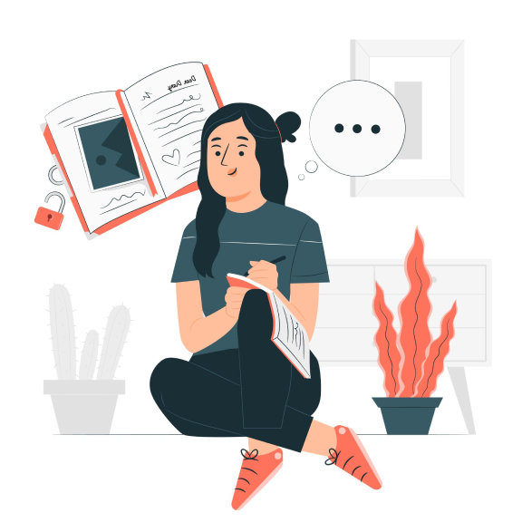

Your personal journaling app
Listen to your mind by writing

Your personal journaling app
Clutter free text pad to carve your thoughts. Designed to securely auto save your data.
Calendar widget to navigate between time. Reflect your consistency
With the help of AI, journals are analyzed to understand the emotion behind the words
Journals are encrypted from user’s browser to data store using military algorithms

Mindful journaling is asking yourself why you feel a certain way and then letting it go out of your head and onto the paper. You question yourself about yourself and get to know your values, your motives, the way you think, and how you feel.
You take into consideration more possible outcomes, study your situation, and thus shift your mindset. With the clarity of your thoughts, You stop going in the past, don’t look into the future, and become truly present and mindful of your life.
Journaling allows you to openly express your emotions that you usually keep bottled up. You get an opportunity to have full emotional disclosure and vent without ever being judged. This helps you feel lighter. Seeing your thoughts written in front of you in their true form without any edits helps you see the authenticity of your thinking.
In doing so, you identify your triggers and learn to better handle them. When you write down and figure out the thoughts that are upsetting, you feel happier, calmer, less anxious, and experience overall better mental health.

Journaling is your private space for decision making without any judgment or pressure. This facilitates new perspectives and idea generation. You write different possible scenarios, examine the positive and negative implications, and make better choices.
You build self-awareness and discover things in your mind that might be affecting your behavior and moods. You make your decisions and explanations more realistic and improvise better ways to achieve your goals. You may find out that the thing you are stressing about might not be that big of a deal and this helps you approach it in a more bold manner.

Has been keeping journals since she was 13 years old. She considers them to be her therapy sessions. They’re all simple leather diaries, locked away in a safe in her home. Every boyfriend, every relationship, her friendships, her work, her family — all of them are dissected on pages. Jen is not the type to get into huge, verbal altercations with her boyfriends; her way of dealing with relationship issues has always been to write in her diary, then have a discussion. That way she always has the upper hand in fights, and never loses control.